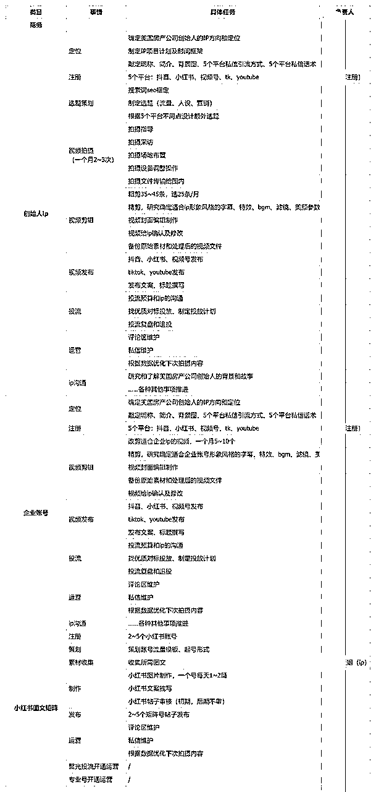
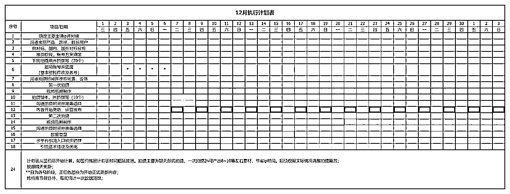

来源：https://mlndzkxzwc.feishu.cn/docx/I3NXdxFaQoMeWBxvjh1cychEnNh
各位圈友好，我是苏夏，一个ip操盘手
操盘的项目从跨境培训、钢琴课ip、美业加盟……10几个项目都有，基本项目在1~3个月能做起流量和客资，不过都是ip口播类。
简单晒下肌肉：
（当然也有失败的案例，没有谁ip孵化成功率是100%，不想大家误会）
然后从23年底我开始接触到几个海外ip项目，包括泰国、斯里兰卡的珠宝源头ip、英国求职、海外房产…
今天主要分享的就是23年12月开始做的一个海外房产项目，项目目前操盘3个月，已经有几百个精准买房意向用户，一套营收在千万人民币以上。（但是利润只在2.5%~4%，因为房产是拿佣金，然后具体的我就不透露了因为项目还在做，分享下思路）
本文非常适合准备打造海外ip或者有海外ip资源的朋友，希望给想尝试海外的小伙伴一些启发
我是22年成为的ip操盘手，当时是先上了生财的抖音大航海，学了抖音相关的知识，然后做的自己的账号，发现自己账号爆了之后却没有产品承接，于是想到去做别的ip，从此开启了ip操盘的路
踩坑无数，包括账号赚钱后被散伙，流量起来了后端却没有销售承接，包括这些经验其实在海外ip上也不例外，依旧可能发生。
但是说这些之前，我先分享一下我为什么会做海外ip，其实也和生财的文章有关，在11月的时候我看了@欧佑铭的《教老外打造ip，5人团队年入千万实操分享》
https://t.zsxq.com/17X7N2OS0
这篇文章看完虽然我没像他一样去实操ip陪跑，但是我的确发现了海外的信息差，以及海外的汇率差，然后刚好那时候有好几个海外项目的资源找到我，于是开始了这个项目
海外ip真的好做，尤其海外华人
说实话，这个项目我在流量板块其实做的一般，流量平均8k~1w播放，比较好的视频也就10w、20w播放量，整个项目没有出过百万播放的视频，但是却依旧不影响项目获客。所以我说海外ip好做
我总结了几个原因
①海外赛道不拥挤。
比如：国内做房产的每个城市都有上千个中介了，一个比一个做的精致。但是在海外你会发现画质都不用太高、文案没那么讲究，依旧很多人买账。尤其是视频号，现在做海外的人真的少，所以如果你是海外房产、海外移民、海外资产配置，我非常建议把视频号和小红书作为重心。
尤其是海外房产，非常多已经在国外的人抖音用不了，但是微信他们依旧每天高频率使用。
而小红书由于海内外使用没有翻墙、限制一说，所以用的人很多，包括海外直播，其他几个平台都要找服务商报白，但小红书很简单的填一个表就能申请下来。
我们自己操盘下来视频号的私信量是10倍高于抖音，小红书是5倍高于抖音，纯视频流量，还未开直播。
②海外找准差异点很容易爆，利用地域差异、地域信息差做视频天然就有爆点
海外可以利用地域差异出系列选题，自带流量点的系列
③获客非常精准。
国内大家问房子可能就是问问，了解了解行情，但是海外房产很多直接上来就是约看房，还有一部分虽然人在国内，但是已经确定了绿卡下来时间，基本2月份不买，就是5月、7月买，（移民用户基本99%是会买房的）他们的问题不是买不买，而是在谁手里买？买哪套？
所以海外房产其实是高客单、高转化的产品，只要你找对了人群。
此外，海外很多这类型产品。像英国求职，也有紧迫性，因为毕业半年内如果没有找到工作是不能留在英国的，所以很多英国求职公司就靠小红书也能做到一年上千万营收。
我聊过的2个英国房产类客户
同时，由于我这次做的是美国房产，额外给大家介绍一下美国房产的特性。
1、美国有一个房屋登记网站，和中国不同，没有哪家地产公司拥有独家房源，所有中介能卖所有房子，所以在美国买房没必要“货比三家”，找三四个不同经纪人比，没必要，因为美国你不管联系谁看到的房子都是一样的，不像中国各公司手里房源不一样。
这就很好的避免客户同时找几个经纪人看，然后跳单。
2、美国房产区域性特别明显，卖纽约的只卖纽约，卖休斯顿的专注休斯顿，很少有讲全美的，这就决定了更加细分，流量更加不卷。
3、美国房产必须和持证经纪人才可买卖，其他国家，像澳洲、加拿大、英国又有不一样的地方
4、很多中国人买房是为了孩子在那边上学，因为那边读初高中考大学的升学率很高，基本国内二本压线的成绩在那边可以上到美国好的公立大学，比如加州大学（ucla国际排名和清华差不多），所以对这部分人群学区房很重要
注册了5个平台账号（抖音、小红书、视频号、tiktok、youtube）
整个起号的事情拆分下来见这2个表，一个总体任务分工，一个月度计划


如果简化来聊，ip账号规划就是
流量板块
做定位策划、选题、拍摄、剪辑、5个平台发布、评论私信运营、投流运营、分析
①看是用情绪做视频，还是用选题脚本来做
②做大而全，还是细分。细分的话是主打移民人群还是投资人群，还是为了孩子教育要买学区房的人群
③主打1000w美元以上的豪宅，还是100w美元以上的普通别墅，还是公寓
④主打企业家富豪还是普通中产
ps：如果定位1000万美元以上豪宅的话，自带流量，但是需要销售团队服务非常用心到位，成交一单佣金就在175万~500万左右
b端：招独立的房产经纪人加入团队（类似招代理）
c端：直接卖房的选题（大而全）
可以找些国内一线城市房产ip，和美国生活博主的选题参考
比如：地产酵母、陈院长说京房（流量选题）
所有海外ip打造有个大痛点，就是很难实地拍摄，但是口播采访类其实很讨巧，是可以远程拍摄的。
优点：节省时间、不怕忘选题
缺点：网卡顿、拍摄角度不对画面不好看、信任感缺失、情绪无法调动难凸显ip人设
采访形式剪辑的粗剪很重要，比如第一句话的不同会造成数据差10倍。
然后小红书封面也得另做，小红书封面和标题对数据影响很大。
3个国内平台用小火花、蚁小二，直接可以发布
2个海外平台需要用魔法翻出去，或者海外有人帮你发布，发布时间都ok
因为是海外的项目，所以用户有可能在国外有可能在国内，只自己回复很难做到及时，最好是和ip划分好运营时间，10点~22点你负责，剩下由ip那边负责。
然后私信回复时，如果是国内客户最好是告知客户因为时差问题，回复可能不及时，把不及时这个劣势反而变成更有信任感的优势。
销售板块
私信回复方式：各平台不一样
视频号：如果单日量不超过100，直接回复微信没有关系，不过引流太猛的话视频号也会判违规。但是视频号好处是短视频和直播是2个板块，视频违规私信被封不会影响直播间流量。
小红书：蓝v+聚光1000块/月，导私信不违规，免费的就让用户加粉丝群，粉丝群内暗示。
抖音：让用户留自己的就好，基本不被举报不违规。
加微后初筛话术（基本2类）
①类是想买房但不明确区域的：问是否在美国？投资还是自住？有没有学区的要求？有几个孩子……
根据此标注好所有客户的基本情况，因为有部分用户是后几个月才来美国，所有需要时长追踪，每个月聊1~2次
②类是看了房源视频来的，已经很清楚房子情况，就想再多了解下实地看看房
这种用户直接安排经纪人带看，带看中问清楚需求，同步再推2套同类型房源
加微后约看流程：
①类客户问清楚基本情况后，最好约个时间通电话，和客户通话里直接邀请看房
②类对接当地经纪人
③所有用户要做私域登记，分级记录，定期追踪
小红书矩阵账号做法：轻人设
置顶视频为人设类视频+其余为营销的房源类图文或视频
比如：
1、小红书房产类的有点敏感，容易违规，最好是开通专业号
2、直接房源营销类图文或视频+聚光投流（因为目前海外房产投聚光的非常少，海外很多项目投产比很不错。留学除外，留学现在一个客资成本已经飙到百元了，当然核心还是看素材）
1、需要海外有资源有交付团队，或有这样的合伙人。
比如：留学保录，那一定得是在这些学校有资源。海外求职，那一定是有各个企业内推的资源。
2、如果想要分到利润，海外一定要有人，私域销售方面一定要掌握。
单纯只做流量是可以在国内操作，但是想赚后端的钱就一定要把后端掌握好，客户微信私域一定是项目方共有，存在企业微信上，然后私域流程一定要搭建完善。
你像房产项目是周期很长的项目，有可能半年前加你微信，然后5个月后才到海外看房，再3个月才成单，所以都需要维护好。
然后移民、留学同样周期比较长，尤其是高端留学，有些可能聊了第1个月聊的，人家在朋友圈看了3个月才成交。
当然房产类的项目其实是可以不和大公司合作，和一些经纪人个人也ok，因为交付比较简单，类似保险代理，还有像海外求职培训也是可以和一些学校的师哥师姐这种个体ip合作。
但是移民、留学……一定要和后端成熟的公司合作。